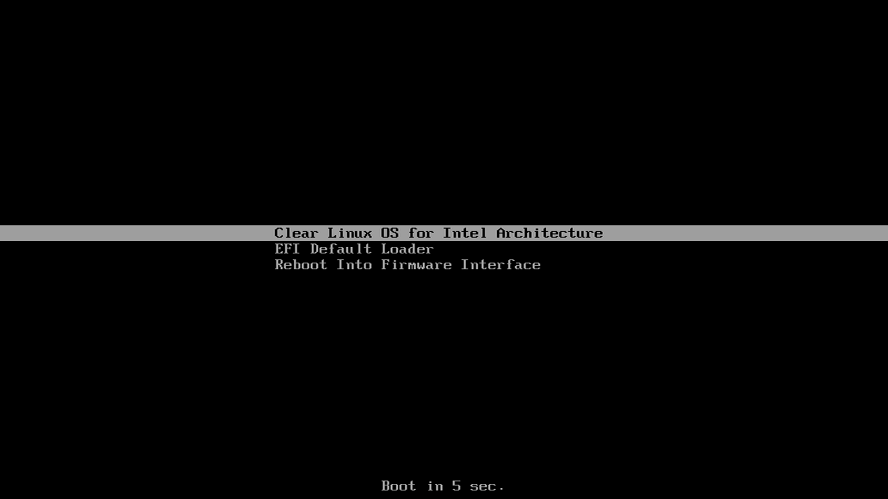
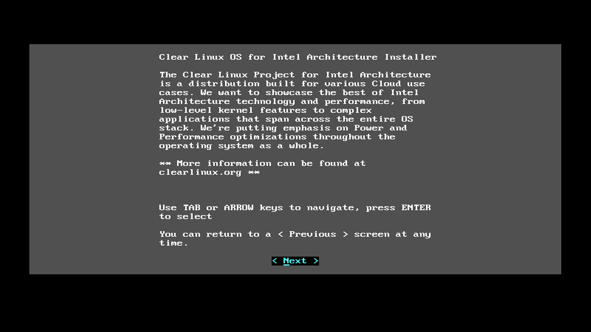

Content Map
Quick Search
Install Clear Linux OS on bare metal
These instructions guide you through the installation of Clear Linux* OS for Intel® Architecture on bare metal using a bootable USB drive.
Before you begin, run our Check processor and EFI firmware compatibility with Clear Linux*.
Download the latest Clear Linux installer image
Get the latest Clear Linux installer image from the image directory.
Look for the clear-[version number]-installer.img.xz file.
Once you have downloaded the image, verify and uncompress the file.
Verify the integrity of the Clear Linux image
Before you use a downloaded Clear Linux image, verify its integrity. Thus, you eliminate the small chance of a corrupted image due to download issues. To support verification, we accompany each released Clear Linux image with an official SHA512 checksum file, which is designated with the suffix -SHA512SUMS.
- Download the official corresponding SHA512 checksum file of your downloaded Clear Linux image.
- Start a terminal emulator.
- Go to the directory with the downloaded image and checksum files.
- Verify the integrity of the image and compare it to its original checksum by entering:
$ sha512sum ./clear-[version number]-[image type].[compression type] | diff ./clear-[version number]-[image type].[compression type]-SHA512SUMS -
If the checksum of the downloaded image is different than the original checksum, the differences will displayed. Otherwise, an empty output indicates a match and your downloaded image is good.
Uncompress the Clear Linux image
We compress all released Clear Linux images by default with either GNU zip (.gz) or XZ (.xz). The compression type we use depends on the target platform or environment of the image. To uncompress the image, follow these steps:
- Start a terminal emulator.
- Go to the directory with the downloaded image.
To uncompress an XZ image, enter:
$ unxz clear-[version number]-[image type].xz
Burn the Clear Linux image onto a USB drive
Caution
Burning an image formats the USB drive, thus destroying all existing content. Backup your data before proceeding.
Open a terminal emulator and get root privilege.
$ sudo -sGo to the directory with the uncompressed image.
Plug in the USB drive.
Identify the USB drive using the lsblk command. This shows all drives attached to the system, including the primary hard disk. In the example output below, there are 4 drives (/dev/sda, /dev/sdb, /dev/sdc, and /dev/sdd) attached, where /dev/sda is primary drive in this case. The remaining are 3 USB drives. The output also shows the mounted partitions (under the MOUNTPOINT column) for each drive.
# lsblkExample output:
NAME MAJ:MIN RM SIZE RO TYPE MOUNTPOINT sdd 8:48 1 15G 0 disk ├─sdd2 8:50 1 5G 0 part /run/media/user1/960c184f-3bb7-42b7-bcaf-0c1282 ├─sdd3 8:51 1 8G 0 part /run/media/user1/704f3382-b26d-4f34-af1b-cb9aab └─sdd1 8:49 1 2G 0 part sdb 8:16 1 14.8G 0 disk └─sdb1 8:17 1 14.8G 0 part /run/media/user1/PATRIOT_USB sdc 8:32 1 7.3G 0 disk └─sdc1 8:33 1 7.3G 0 part /run/media/user1/LINUX MINT sda 8:0 0 335.4G 0 disk ├─sda4 8:4 0 28G 0 part ├─sda2 8:2 0 3.7G 0 part [SWAP] ├─sda7 8:7 0 6G 0 part /home ├─sda5 8:5 0 1G 0 part /boot ├─sda3 8:3 0 954M 0 part /boot/efi ├─sda1 8:1 0 28G 0 part ├─sda8 8:8 0 30G 0 part / └─sda6 8:6 0 7.9G 0 part [SWAP]
Before an image can be burned onto a USB drive, it should be un-mounted. Some Linux distros may automatically mount a USB drive when it is plugged in. To unmount, use the umount command followed by the device identifier/partition. For example: From the above lsblk output, /dev/sdd has 2 mounted partitions. To unmount them, enter:
# umount /dev/sdd2 # umount /dev/sdd3
Burn the image onto the USB drive. The command-line example below burns an uncompressed image onto /dev/sdd:
# dd if=./clear-[version number]-[image type] of=/dev/sdd bs=4M status=progress
Install Clear Linux on your target system
We formatted the previously created USB drive as a UEFI boot device. Our target system has a hard drive installed containing a single primary partition. The target system needs a wired Internet connection with DHCP.
Follow these steps to install Clear Linux on the target system:
Insert the USB drive into an available USB slot.
Power on the system.
Open the system BIOS setup menu, normally by pressing the
F2key. Your BIOS setup menu entry point may vary.In the setup menu, enable the UEFI boot and set the USB drive as the first option in the device boot order.
Save these settings and exit.
Reboot the target system.
The Clear Linux Installer menu will start as shown in Figure 1. Select Clear Linux OS for Intel Architecture and press the
Enterkey or wait five seconds to automatically select it.Figure 1: Clear Linux boot menu
This will take you into the Clear Linux OS for Intel Architecture Installer menu as shown in figure 2 and explains how to navigate through the Clear Linux installer setup menus.
Figure 2: Clear Linux OS for Intel Architecture Installer
Press the
Enterkey.The Keyboard selection menu shown in figure 3 allows you to set up the keyboard layout that you will be using to navigate within the Clear Linux installer setup menus.

Figure 3: Keyboard Selection
For this guide we will select for the keyboard mapping, which should already be highlighted. Press the
Enterkey to continue to the next menu.
{kind=link}
{kind=link}
Network requirements
The Network Requirements menu, the first step of the Clear Linux installer setup process, will attempt to connect to the Clear Linux update server where the installer image is located. Once the connection to the Clear Linux update server is established, you will see a screen similar to the one shown in figure 4:

Figure 4: Network Requirements
If you need to configure any Proxy Settings to gain access to the
update server, enter the appropriate address and port of your proxy server in
the HTTPS proxy: field. Select the < Set proxy
configuration > button and press Enter. You will then see the
connection to the update server established.
Optionally, set up a static IP configuration to your Clear Linux
installer image. Enter the required information in the Interface,
IP address, Subnet mask, Gateway and
DNS fields and then select the < Set static IP
configuration > button and press the Enter key.
The information displayed in the lower right quadrant of the screen shows the current IP configuration for the Clear Linux update server where the installer image is located.
Note
If you are having difficulty establishing a connection to the update server
and you see the message none detected, install will fail, you
can press the Tab key to highlight the < Refresh >
button and press Enter to attempt to reconnect to the Clear Linux update
server. If this fails to establish a connection after multiple attempts,
reboot your system and return to this step.
Once the connection to the Clear Linux udpate server is established, use the
Tab key to advance to the < Next > button and press
Enter to advance to the next Clear Linux installer setup menu.
Choose Clear Linux installer action
The Choose Action menu is where you can choose to install, repair, open a shell, or exit the Clear Linux installer. This menu is shown in figure 5:

Figure 5: Choose Action
Select the menu item to continue the installation process.
The menu option will run the swupd --fix command to correct any issues found with the system software that has already been installed on your system and correct any issues found by overwriting the incorrect file content, adding missing files, fixing permissions and any additional changes required to return the file to it’s original content and permissions.
The menu item opens a terminal session on your system as the root user and you will be able to manage your system from this console. When you are finished, type exit to return to the Choose Action menu.
The menu option terminates the Clear Linux installation process and the system will shut down.
You will be prompted to join the Stability Enhancement Program as shown in figure 6. Press the
SpacebarorEnterkey while the cursor is in the [ ] Yes. button to enable this functionality and then select the < Next > button to advance to the next menu item.
Figure 6: Stability Enhancement Program
If you choose not to enable this functionality during this step, you can install the
telemetricssoftware bundle at a later time. As stated in the menu, this feature only collects anonymous information about your system to help improve system stability and no personally identifiable information is collected. Please visit our website to learn more about telemetry.
Choose Clear Linux installation type
Figure 7 shows the next step of the Clear Linux installer: Choose installation Type. Chose whether to install Clear Linux automatically or manually. To end the installer process and shut down the system, select the < Exit > button.

Figure 7: Choose installation Type
If you select < Automatic > as the installation type, the Clear Linux Installer will add the minimum amount of functionality required for a fully functional Clear Linux system. You will not be able to modify the disk layout, add a user or any other tasks that the manual installation process will allow.
With the < Manual(Advanced) > option, you can do the following additional tasks during Clear Linux Installer setup:
- Modify the disk layout using the cgdisk utility.
- Add additional command-line parameters to the kernel.
- Create a hostname for your system.
- Create an administrative user.
- Add additional software bundles to enhance the functionality of your initial Clear Linux installation.
- Optionally, set up a static IP address for your system.
If you want to perform any of these additional tasks, select the < Manual(Advanced) > menu item and follow the steps in our Bare metal manual installation guide to complete the Clear Linux manual installation process. Otherwise, you can follow the Clear Linux automatic installation steps.
Clear Linux automatic installation
To install the minimum components for your Clear Linux implementation, select the
< Automatic > menu item shown in figure 7 and press the
Enter key.
The Choose target device for installation screen shown in figure 8
appears. Move the cursor to the desired target and press the Enter
key.

Figure 8: Choose target device for installation
In this example we selected the single primary partition from our hard drive.
With all the Clear Linux installer setup information gathered for the automatic installation option, the Clear Linux Installer prompts you to begin the actual installation as shown in figure 9.

Figure 9: Begin installation
When you are satisfied with the information you have entered, select the
< Yes > button and press Enter to begin installing Clear Linux.
Clear Linux Installation begins and each step shows its status as it progresses through the automated installation process.
Once all steps have completed, you will see the Successful
installation status message and the < Ok > button is highlighted
as shown in figure 10. Press the Enter key to continue.

Figure 10: Installation complete
Figure 11 shows the installer’s final screen prompting you that the
installation completed successfully and the system will reboot. Press the
Enter key and remove the USB media while the system restarts.
{kind=link}
Figure 11: Successful Installation
Set up your root account
Once the Clear Linux installation is complete and the system boots, a full screen console requests your login: as shown in figure 12:
{kind=link}
Figure 12: Login screen
- At the initial login prompt, enter:
root - Once prompted, enter a new password.
- Re-enter the password to verify it.
You have now set your root password and are logged in with root privileges.
Congratulations!
You have successfully installed Clear Linux on a bare metal system using the
automatic installation method and set the password for the root user.
The automatic installation of Clear Linux is designed to install with minimal software overhead. Therefore, some housekeeping and package installations could be needed before you can take full advantage of the Clear Linux operating system. These instructions are captured in the Create and enable a new user space.
- Create a new user
- Update the OS to its most current version using swupd.
- Install the most common applications for system administrators and developers using bundles.
- Setup a new user.
- Setup sudo privileges for that new user.
- Install a GUI using those sudo privileges.